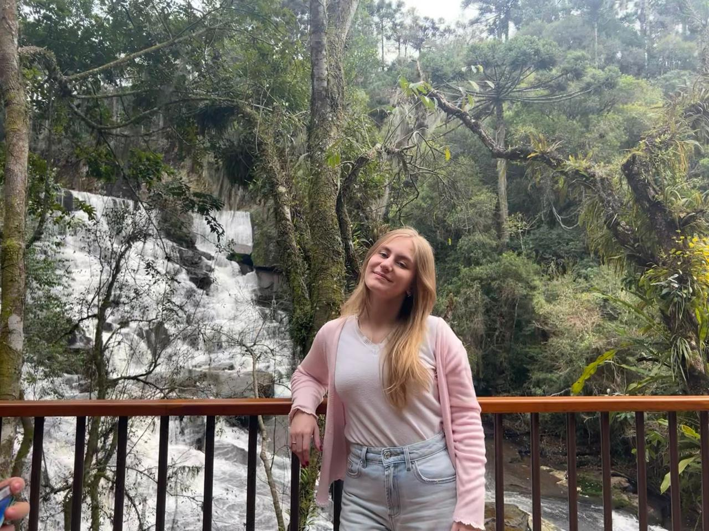
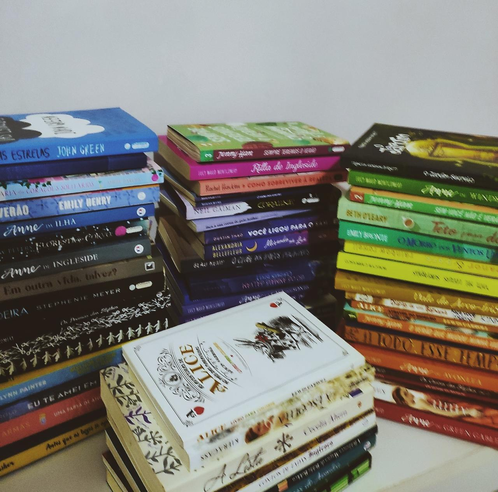

Um pouquinho sobre mim:
Me chamo Annie Émilie Ellwanger, tenho 18 anos e moro em Não-Me-Toque/RS. Desde pequena sempre gostei muito da área da tecnologia, especialmente pelo universo dos jogos. Em 2024, dei o primeiro passo na minha carreira profissional ao ingressar em um curso de desenvolvimento mobile pelo SENAI. Foi essa experiência que transformou minha paixão em propósito e me deu a certeza de que a área de TI é o caminho que quero seguir.
Alguns dos meus interesses: Sou completamente apaixonada por flores, gatinhos fofos, livros de romance e jogos. No topo das minhas preferências estão as tulipas e os lírios, além da minha gatinha, a Angelina (ou Angel, para os mais íntimos). Quando o assunto é leitura, meus livros favoritos são "Todo Esse Tempo" e "Assim Como nos Filmes". Já no mundo dos games, divido meu tempo entre o cenário competitivo de Valorant e as aventuras de Elden Ring e Hello Kitty Island Adventure. Além disso, gosto muito de viajar e conhecer lugares novos com a minha família, com o meu namorado e minhas amigas.

